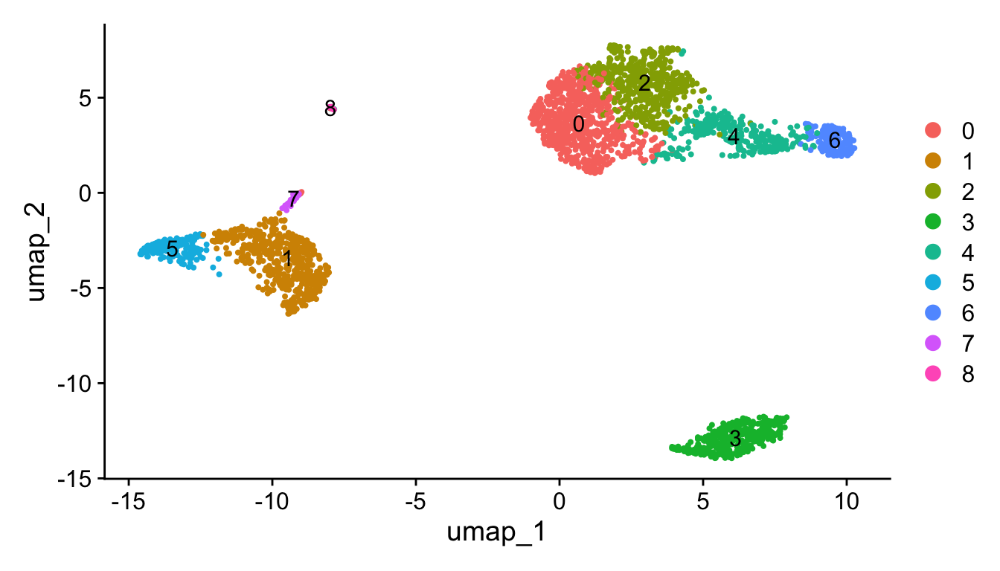
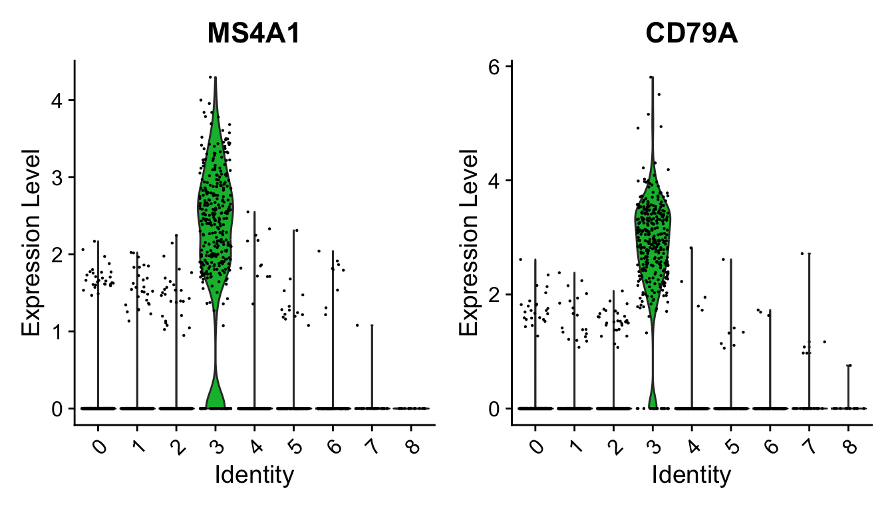

第 1 章 Seurat 标准处理流程
Seurat 是一个 R 软件包，用于单细胞 RNA 测序数据的质量控制、分析和探索。Seurat 旨在帮助用户识别和解释单细胞转录组测量中的异质性来源，并整合不同类型的单细胞数据。
代码：https://satijalab.org/seurat/articles/pbmc3k_tutorial
数据：https://cf.10xgenomics.com/samples/cell/pbmc3k/pbmc3k_filtered_gene_bc_matrices.tar.gz
1.1 设置 Seurat 对象
10X的输入数据是固定的三个文件，在工作目录下新建01_data/，把三个文件放进去。
pbmc.data <- Read10X(data.dir = "01_data/")
pbmc <- CreateSeuratObject(counts = pbmc.data,
project = "pbmc3k",
min.cells = 3, # 一个基因至少要在3个细胞里面有表达，才被保留
min.features = 200) # 一个细胞里面至少要表达两百个基因，才被保留。
pbmc
## An object of class Seurat
## 13714 features across 2700 samples within 1 assay
## Active assay: RNA (13714 features, 0 variable features)
## 1 layer present: counts1.2 QC 和选择细胞进行进一步分析
常用的几个 QC 指标包括：
- 每个细胞中检测到的独特基因的数量。
- 低质量的细胞或空液滴通常只有很少的基因。
- 细胞双胞胎或多胞胎可能表现出异常高的基因计数。
- 低质量的细胞或空液滴通常只有很少的基因。
- 在细胞内检测到的分子总数（与独特的基因强烈相关）
- 映射到线粒体基因组的 reads 百分比。
- 低质量/垂死的细胞通常表现出广泛的线粒体污染。
- 使用
PercentageFeatureSet()函数计算线粒体 QC 指标，该函数计算源自一组特征的计数百分比。 - 使用所有以 MT- 开头的基因作为一组线粒体基因。
- 低质量/垂死的细胞通常表现出广泛的线粒体污染。
nFeature_RNA是每个细胞中检测到的基因数量。nCount_RNA是细胞内检测到的分子总数。nFeature_RNA过低，表示该细胞可能已死/将死或是空液滴。太高的nCount_RNA和/或nFeature_RNA表明“细胞”实际上可以是两个或多个细胞。结合线粒体基因count数除去异常值，即可除去大多数双峰/死细胞/空液滴，因此它们过滤是常见的预处理步骤。 参考自：https://www.biostars.org/p/407036/
# [[ 操作符可以将列添加到对象元数据中。这是存放 QC 统计数据的好地方。
pbmc[["percent.mt"]] <- PercentageFeatureSet(pbmc, pattern = "^MT-")QC指标储存位置
在 CreateSeuratObject() 期间，会自动计算唯一基因的数量和总分子数
head(pbmc@meta.data, 5)
## orig.ident nCount_RNA nFeature_RNA percent.mt
## AAACATACAACCAC-1 pbmc3k 2419 779 3.0177759
## AAACATTGAGCTAC-1 pbmc3k 4903 1352 3.7935958
## AAACATTGATCAGC-1 pbmc3k 3147 1129 0.8897363
## AAACCGTGCTTCCG-1 pbmc3k 2639 960 1.7430845
## AAACCGTGTATGCG-1 pbmc3k 980 521 1.2244898第一列orig.ident是原始细胞的标识；
第二列nCount_RNA是每个细胞的RNA分子数；
第三列nFeature_RNA是每个细胞检测到的基因数。
# 将 QC 指标可视化为小提琴图
VlnPlot(pbmc,
features = c("nFeature_RNA", "nCount_RNA", "percent.mt"),
ncol = 3,
pt.size = 0.5)
1.3 数据标准化
从数据集中移除不需要的细胞后，下一步是标准化数据。默认情况下，我们采用全局缩放标准化方法 “LogNormalize”，该方法通过总表达量对每个细胞的特征表达测量值进行标准化，然后将其乘以一个比例因子（默认为 10,000），并对结果进行对数转换。在 Seurat v5 中，标准化值存储在 pbmc[["RNA"]]$data 中。
pbmc <- NormalizeData(pbmc)
# pbmc <- NormalizeData(pbmc, normalization.method = "LogNormalize", scale.factor = 10000) # 默认值虽然这种标准化方法是 scRNA-seq 分析中的标准且广泛使用的方法，但全局缩放依赖于每个细胞最初包含相同数量 RNA 分子的假设。我们和其他人已经开发了单细胞预处理的替代工作流程，这些工作流程不作这些假设。对于感兴趣的用户，请查看我们的 SCTransform() 标准化工作流程。该方法在我们的论文中有所描述，此处提供了一个使用 Seurat 的单独 vignette。使用 SCTransform 取代了运行 NormalizeData 、 FindVariableFeatures 或 ScaleData （如下所述）的需要。
1.4 高度可变特征的识别（特征选择）
计算数据集中表现出高度细胞间变异的特征子集（即，它们在某些细胞中高度表达，而在另一些细胞中低表达）。在下游分析中关注这些基因有助于突出单细胞数据集中的生物学信号。
# 默认情况下，我们每个数据集返回 2,000 个特征。这些将用于下游分析，如 PCA。
pbmc <- FindVariableFeatures(pbmc, selection.method = "vst", nfeatures = 2000)
# 识别 10 个变异程度最高的基因
top10 <- head(VariableFeatures(pbmc), 10)
# 绘制带标签和不带标签的变量特征
plot1 <- VariableFeaturePlot(pbmc)
plot2 <- LabelPoints(plot = plot1, points = top10, repel = TRUE)
plot1 + plot21.5 缩放数据
应用线性变换（“缩放”），这是像 PCA 这样的降维技术之前的标准预处理步骤。
ScaleData() 函数：
- 移动每个基因的表达，使细胞间的平均表达为 0.
- 缩放每个基因的表达，使细胞间的方差为 1.
- 这一步在下游分析中给予相同的权重，以便高表达的基因不会占主导地位.
- 结果存储在 pbmc[[“RNA”]]$scale.data 中.
- 默认情况下，仅缩放可变特征。
- 可以指定 features 参数来缩放其他特征
1.6 线性降维
对缩放后的数据执行 PCA。默认情况下，仅使用先前确定的可变特征作为输入，但如果您想选择不同的子集，可以使用 features 参数进行定义（如果您确实想使用自定义的特征子集，请确保首先将这些特征传递给 ScaleData ）。
pbmc <- RunPCA(pbmc, features = VariableFeatures(object = pbmc))
print(pbmc[["pca"]], dims = 1:5, nfeatures = 5)
## PC_ 1
## Positive: CST3, TYROBP, LST1, AIF1, FTL
## Negative: MALAT1, LTB, IL32, IL7R, CD2
## PC_ 2
## Positive: CD79A, MS4A1, TCL1A, HLA-DQA1, HLA-DQB1
## Negative: NKG7, PRF1, CST7, GZMB, GZMA
## PC_ 3
## Positive: HLA-DQA1, CD79A, CD79B, HLA-DQB1, HLA-DPB1
## Negative: PPBP, PF4, SDPR, SPARC, GNG11
## PC_ 4
## Positive: HLA-DQA1, CD79B, CD79A, MS4A1, HLA-DQB1
## Negative: VIM, IL7R, S100A6, IL32, S100A8
## PC_ 5
## Positive: GZMB, NKG7, S100A8, FGFBP2, GNLY
## Negative: LTB, IL7R, CKB, VIM, MS4A7Seurat 提供了几种有用的方法来可视化定义 PCA 的细胞和特征，包括 VizDimReduction() 、 DimPlot() 和 DimHeatmap()


1.7 确定数据集的“维度”
为了克服 scRNA-seq 数据中单个特征的大量技术噪音，Seurat 基于细胞的 PCA 得分对细胞进行聚类，每个 PC 本质上代表一个“元特征”，它整合了相关特征集的信息。因此，最重要的主成分代表了数据集的稳健压缩。但是，我们应该选择包含多少个组件呢？
“肘部图”：基于每个主成分解释的方差百分比对主成分进行排序（ ElbowPlot() 函数）。
 可以观察到 PC9-10 附近的“肘部”，这表明大部分真实信号都在前 10 个 PC 中捕获。
可以观察到 PC9-10 附近的“肘部”，这表明大部分真实信号都在前 10 个 PC 中捕获。
1.8 细胞聚类
Seurat 应用了一种基于图的聚类方法，该方法建立在 (Macosko et al) 中的初始策略之上。重要的是，驱动聚类分析的距离度量（基于先前识别的 PC）保持不变。简而言之，这些方法将细胞嵌入到图结构中——例如，K 最近邻 (KNN) 图，其中在具有相似特征表达模式的细胞之间绘制边，然后尝试将此图划分为高度互连的“准团”或“社区”。
与 PhenoGraph 类似，我们首先基于 PCA 空间中的欧几里得距离构建 KNN 图，并根据其局部邻域中的共享重叠（Jaccard 相似性）细化任意两个细胞之间的边缘权重。此步骤使用 FindNeighbors() 函数执行，并将先前定义的数据集维度（前 10 个 PC）作为输入。
为了对细胞进行聚类，我们接下来应用模块化优化技术，例如 Louvain 算法（默认）或 SLM [SLM, Blondel et al., Journal of Statistical Mechanics]，以迭代地将细胞组合在一起，目标是优化标准模块化函数。 FindClusters() 函数实现了此过程，并包含一个分辨率参数，该参数设置下游聚类的“粒度”，增加的值会导致更多的聚类。我们发现，将此参数设置为 0.4-1.2 通常会为大约 3K 细胞的单细胞数据集返回良好的结果。对于较大的数据集，最佳分辨率通常会增加。可以使用 Idents() 函数找到聚类。
# 结合JackStrawPlot和ElbowPlot，挑选10个PC，所以这里dims定义为1:10
pbmc <- FindNeighbors(pbmc, dims = 1:10)
pbmc <- FindClusters(pbmc, resolution = 0.5)
## Modularity Optimizer version 1.3.0 by Ludo Waltman and Nees Jan van Eck
##
## Number of nodes: 2638
## Number of edges: 95927
##
## Running Louvain algorithm...
## Maximum modularity in 10 random starts: 0.8728
## Number of communities: 9
## Elapsed time: 0 seconds
# 结果聚成几类，用Idents查看
head(Idents(pbmc), 5)
## AAACATACAACCAC-1 AAACATTGAGCTAC-1 AAACATTGATCAGC-1 AAACCGTGCTTCCG-1
## 2 3 2 1
## AAACCGTGTATGCG-1
## 6
## Levels: 0 1 2 3 4 5 6 7 8
length(levels(Idents(pbmc)))
## [1] 9确定聚类“粒度”的方法
设置不同的分辨率，观察分群效果()
library(cowplot)
library(clustree)
input_sce.all <- pbmc
for (res in c(0.01, 0.05, 0.1, 0.2, 0.3, 0.5, 0.8, 1)) {
input_sce.all <- FindClusters(input_sce.all, #graph.name = "CCA_snn",
resolution = res,
algorithm = 1)
}
apply(input_sce.all@meta.data[,grep("RNA_snn",colnames(input_sce.all@meta.data))],2,table)
p1_dim <- plot_grid(ncol = 4,
DimPlot(input_sce.all, reduction = "umap", group.by = "RNA_snn_res.0.01") + ggtitle("louvain_0.01"),
DimPlot(input_sce.all, reduction = "umap", group.by = "RNA_snn_res.0.05") + ggtitle("louvain_0.05"),
DimPlot(input_sce.all, reduction = "umap", group.by = "RNA_snn_res.0.1") + ggtitle("louvain_0.1"),
DimPlot(input_sce.all, reduction = "umap", group.by = "RNA_snn_res.0.2") + ggtitle("louvain_0.2"))
p1_dim
# ggsave(plot=p1_dim, filename="Dimplot_diff_resolution_low.pdf",width = 14)
p2_dim <- plot_grid(ncol = 4,
DimPlot(input_sce.all, reduction = "umap", group.by = "RNA_snn_res.0.3") + ggtitle("louvain_0.3"),
DimPlot(input_sce.all, reduction = "umap", group.by = "RNA_snn_res.0.5") + ggtitle("louvain_0.5"),
DimPlot(input_sce.all, reduction = "umap", group.by = "RNA_snn_res.0.8") + ggtitle("louvain_0.8"),
DimPlot(input_sce.all, reduction = "umap", group.by = "RNA_snn_res.1") + ggtitle("louvain_1"))
p2_dim
# ggsave(plot = p2_dim, filename = "Dimplot_diff_resolution_high.pdf", width = 18)
p2_tree <- clustree(input_sce.all@meta.data, prefix = "RNA_snn_res.")
p2_tree
# ggsave(plot = p2_tree, filename="Tree_diff_resolution.pdf")1.9 运行非线性降维（UMAP/tSNE）
Seurat 提供了几种非线性降维技术，例如 tSNE 和 UMAP，用于可视化和探索这些数据集。这些算法的目标是学习数据集中的底层结构，以便将相似的细胞放置在低维空间中。因此，在上面确定的基于图的聚类中分组在一起的细胞应该在这些降维图中共同定位。
虽然我们和其他人经常发现像 tSNE 和 UMAP 这样的 2D 可视化技术是探索数据集的宝贵工具，但所有可视化技术都有局限性，并且无法完全代表底层数据的复杂性。特别是，这些方法旨在保留数据集中的局部距离（即，确保具有非常相似的基因表达谱的细胞共同定位），但通常不保留更全局的关系。我们鼓励用户利用像 UMAP 这样的技术进行可视化，但要避免仅基于可视化技术得出生物学结论。

1.10 寻找差异表达的特征（聚类 Marker）
啥叫marker基因呢。和差异基因里面的上调基因有点类似，某个基因在某一簇细胞里表达量都很高，在其他簇表达量很低，那么这个基因就是这簇细胞的象征。
Seurat 可以帮助您找到通过差异表达 (DE) 定义聚类的标记。默认情况下，它识别单个聚类的阳性和阴性标记（在 ident.1 中指定），与其他所有细胞相比。 FindAllMarkers() 自动执行所有聚类的此过程，但您也可以测试聚类组之间，或针对所有细胞进行测试。
在 Seurat v5 中，我们使用 presto 包以显著提高 DE 分析的速度，特别是对于大型数据集。对于未使用 presto 的用户，您可以查看此函数 ( ?FindMarkers ) 的文档，以探索 min.pct 和 logfc.threshold 参数，可以增加这些参数以提高 DE 测试的速度。
# 找到 cluster 2 的 marker 基因
cluster2.markers <- FindMarkers(pbmc, ident.1 = 2)
head(cluster2.markers, n = 5)
## p_val avg_log2FC pct.1 pct.2 p_val_adj
## IL32 2.892340e-90 1.3070772 0.947 0.465 3.966555e-86
## LTB 1.060121e-86 1.3312674 0.981 0.643 1.453850e-82
## CD3D 8.794641e-71 1.0597620 0.922 0.432 1.206097e-66
## IL7R 3.516098e-68 1.4377848 0.750 0.326 4.821977e-64
## LDHB 1.642480e-67 0.9911924 0.954 0.614 2.252497e-63# 找出区分簇 5 与簇 0 和簇 3 的所有标记
cluster5.markers <- FindMarkers(pbmc, ident.1 = 5, ident.2 = c(0, 3))
head(cluster5.markers, n = 5)
## p_val avg_log2FC pct.1 pct.2 p_val_adj
## FCGR3A 8.246578e-205 6.794969 0.975 0.040 1.130936e-200
## IFITM3 1.677613e-195 6.192558 0.975 0.049 2.300678e-191
## CFD 2.401156e-193 6.015172 0.938 0.038 3.292945e-189
## CD68 2.900384e-191 5.530330 0.926 0.035 3.977587e-187
## RP11-290F20.3 2.513244e-186 6.297999 0.840 0.017 3.446663e-182# 为每个簇与所有剩余细胞相比寻找标记物，仅报告阳性结果
pbmc.markers <- FindAllMarkers(pbmc, only.pos = TRUE)
pbmc.markers %>%
group_by(cluster) %>%
dplyr::filter(avg_log2FC > 1)
## # A tibble: 7,019 × 7
## # Groups: cluster [9]
## p_val avg_log2FC pct.1 pct.2 p_val_adj cluster gene
## <dbl> <dbl> <dbl> <dbl> <dbl> <fct> <chr>
## 1 3.75e-112 1.21 0.912 0.592 5.14e-108 0 LDHB
## 2 9.57e- 88 2.40 0.447 0.108 1.31e- 83 0 CCR7
## 3 1.15e- 76 1.06 0.845 0.406 1.58e- 72 0 CD3D
## 4 1.12e- 54 1.04 0.731 0.4 1.54e- 50 0 CD3E
## 5 1.35e- 51 2.14 0.342 0.103 1.86e- 47 0 LEF1
## 6 1.94e- 47 1.20 0.629 0.359 2.66e- 43 0 NOSIP
## 7 2.81e- 44 1.53 0.443 0.185 3.85e- 40 0 PIK3IP1
## 8 6.27e- 43 1.99 0.33 0.112 8.60e- 39 0 PRKCQ-AS1
## 9 1.16e- 40 2.70 0.2 0.04 1.59e- 36 0 FHIT
## 10 1.34e- 34 1.96 0.268 0.087 1.84e- 30 0 MAL
## # ℹ 7,009 more rows我们包含几个用于可视化标记表达的工具。 VlnPlot() （显示跨集群的表达概率分布）和 FeaturePlot() （在 tSNE 或 PCA 图上可视化特征表达）是我们最常用的可视化方法。我们还建议探索 RidgePlot() 、 CellScatter() 和 DotPlot() 作为查看数据集的附加方法。

pbmc.markers %>%
group_by(cluster) %>%
dplyr::filter(avg_log2FC > 1) %>%
slice_head(n = 10) %>%
ungroup() -> top10
DoHeatmap(pbmc, features = top10$gene) + NoLegend()
1.11 根据 marker 基因确定细胞
new.cluster.ids <- c("Naive CD4 T", "CD14+ Mono", "Memory CD4 T", "B", "CD8 T", "FCGR3A+ Mono",
"NK", "DC", "Platelet")
names(new.cluster.ids) <- levels(pbmc)
pbmc <- RenameIdents(pbmc, new.cluster.ids)
pbmc$seurat_annotations <- Idents(pbmc)
DimPlot(pbmc, reduction = "umap", label = TRUE, pt.size = 0.5) + NoLegend()
保存结果
library(ggplot2)
plot <- DimPlot(pbmc, reduction = "umap", label = TRUE, label.size = 4.5) + xlab("UMAP 1") + ylab("UMAP 2") +
theme(axis.title = element_text(size = 18), legend.text = element_text(size = 18)) + guides(colour = guide_legend(override.aes = list(size = 10)))
ggsave(filename = "../output/images/pbmc3k_umap.jpg", height = 7, width = 12, plot = plot, quality = 50)